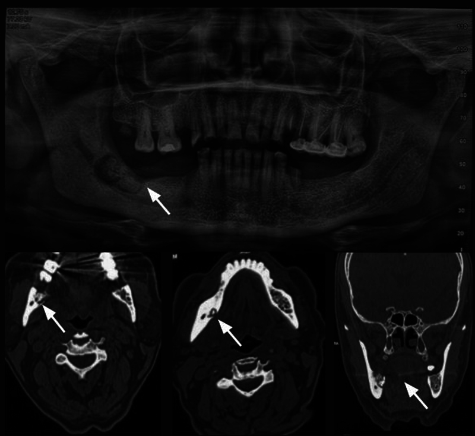
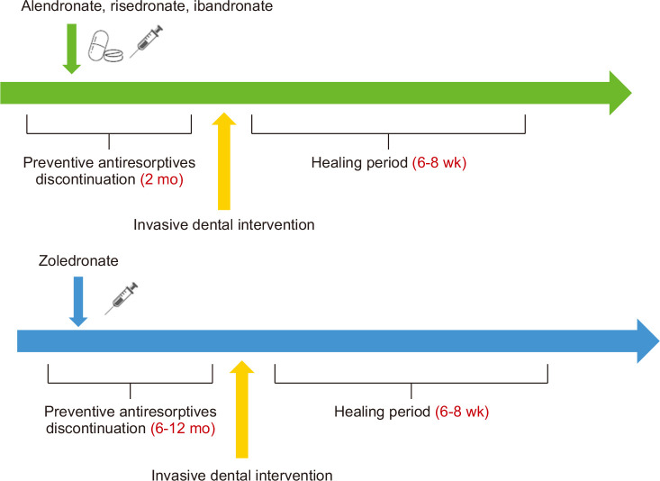
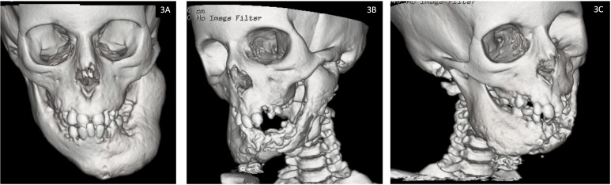
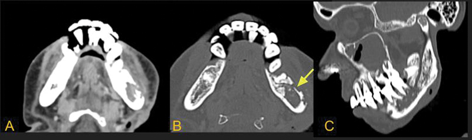

6108 — Hoại tử xương hàm do thuốc (MRONJ) ở trẻ: mảnh xương chết trên CBCT/CT, phân độ AAOMS & ngưỡng ngưng thuốc / Medication-related osteonecrosis of the jaw in children
Tags: pattern:hoai-tu-xuong-ham pattern:sequestrum pattern:mat-xuong vung:xuong-ham vung:ham-duoi score:AAOMS protocol:CBCT protocol:CT-xuong-ham protocol:MRI-xuong-ham incidentaloma:mat-xuong-ham
Mức chắc chắn (certainty): tổng hợp y văn (literature synthesis) — ghép định nghĩa/phân độ AAOMS 2022 qua đồng thuận Hàn Quốc 2025 (Kim JW et al., JKAOMS 2025;51:333, PMC12766015) và châu Á–Thái Bình Dương 2026 (Taguchi A et al., Osteoporos Sarcopenia 2026, PMC13069298) với số liệu nhi khoa (tổng quan hệ thống 1.284 trẻ, J Oral Maxillofac Surg 2026;84(4), PMID 41344384; đoàn hệ 178 trẻ, J Oral Maxillofac Surg 2024, PMID 38950582), hình ảnh hàm (Justine D et al., Indian J Radiol Imaging 2025, PMC12169932) và ca ONJ tiến triển ở trẻ (Pieridou C et al., Front Endocrinol 2023;14:1258340, PMC10619726).
Điểm chốt của bài: MRONJ ở trẻ cực hiếm — 1 ca trong 1.284 trẻ dùng thuốc kháng tiêu xương, và 0/178 trẻ trong một đoàn hệ 16 năm; ca duy nhất được báo cáo chưa xuất hiện trước khi mọc răng vĩnh viễn. Vì vậy khi thấy hoại tử xương hàm ở trẻ KHÔNG có tiền sử bisphosphonate/denosumab, phải nghĩ bệnh xương cứng di truyền, viêm xương tủy, LCH hay u ác — không được dán nhãn MRONJ. Ngược lại, trẻ đang dùng thuốc mà có mảnh xương chết + đặc xương quanh ổ tiêu trên CBCT/CT, không phản ứng màng xương, thì chốt là MRONJ và phân độ AAOMS quyết định mổ sớm hay bảo tồn.
1. Tổng quan — vì sao thuốc kháng tiêu xương làm xương hàm chết, và vì sao trẻ khác người lớn
- Cơ chế (pathophysiology): bisphosphonate gắn vào hydroxyapatite, bị nhập bào bởi osteoclast → ức chế men farnesyl pyrophosphate synthase → osteoclast ngừng hoạt động và chết theo chương trình. Denosumab là kháng thể anti-RANKL, chặn trục RANK–RANKL → ngừng biệt hóa và sống sót của osteoclast. Hệ quả chung: tái tạo xương giảm mạnh, vi tổn thương tích lũy, không sửa chữa được, kèm tác động kháng tạo mạch khi phối hợp thuốc ức chế VEGF → vùng xương thiếu máu, hoại tử, không tự thải.
- Vì sao đúng xương hàm: hàm là xương duy nhất xuyên qua niêm mạc (ổ răng, túi nha chu, ống tuỷ răng) nên nhiễm khuẩn khu trú luôn sẵn; xương hàm tái tạo rất nhanh (ổ răng lành thường 6–8 tuần) nên càng phụ thuộc osteoclast; niêm mạc mỏng, dễ rách khi nhai/nhổ răng → cửa vào vi khuẩn. Ba yếu tố này giải thích vì sao cùng một thuốc lại gây hoại tử ở hàm chứ không ở xương đùi.
- Vì sao hình ảnh trông như vậy (vật lý + mô bệnh):
- Xương chết giữ nguyên khoáng chất nhưng mất tủy xương và mạch máu → trên CT đậm (đặc xương, thường > 500 HU; xương vỏ 700–1.500 HU, xương xốp 150–400 HU), không có tăng sinh mạch; quanh nó là mô hạt viêm tái tạo → viền tiêu xương (radiolucent halo). Bộ đôi "mảnh xương chết đậm + viền sáng" chính là dấu chốt.
- MRI: xương chết mất tín hiệu mỡ tủy → T1 thấp; không có nước tự do → T2/STIR thấp (khác phù tủy do viêm, STIR rất sáng); không ngấm thuốc ở trung tâm, chỉ viền mô hạt ngấm quanh mảnh chết.
- Không có phản ứng màng xương (khác viêm xương tủy): màng xương cần mạch máu và màng xương còn sống — trong MRONJ cả hai đã mất. Đây là dấu loại trừ quan trọng nhất trên phim (Justine 2025, PMC12169932).
- Ngưỡng định lượng phải nhớ (người lớn, dùng làm mốc so sánh):
- Liều thấp (loãng xương): 0,025–0,136%/năm, tương đương 21–283 ca/100.000 người-năm; bằng chứng cho "ngưng thuốc trước nhổ răng" vẫn chưa đủ (đồng thuận châu Á–Thái Bình Dương 2026, PMC13069298).
- Nguy cơ tăng dần theo thời gian dùng, đặc biệt sau 12 tháng, và tăng vọt với zoledronate tĩnh mạch liều cao hoặc denosumab 120 mg/tháng (chỉ định ung thư) (đồng thuận Hàn Quốc 2025, PMC12766015).
- Số liệu NHI KHOA (phần quyết định cách đọc phim):
- Tổng quan hệ thống 6 nghiên cứu, 1.284 trẻ dùng bisphosphonate/denosumab: chỉ 1 ca MRONJ; thời gian phơi nhiễm trung vị 4,6 năm (IQR 2,3–6,3); yếu tố nguy cơ nêu được là dùng bisphosphonate dài hạn + vệ sinh răng miệng kém; ca duy nhất không xuất hiện trước khi mọc răng vĩnh viễn (PMID 41344384).
- Đoàn hệ 178 trẻ (tuổi trung bình 11,7 ± 6,1), 164 dùng bisphosphonate (92,1%) và 14 dùng denosumab (7,9%): 0 ca ONJ; denosumab gây tăng canxi máu/đau xương nặng 28,6% vs 1,2% so với bisphosphonate → nhóm tác giả khuyến nghị bisphosphonate là lựa chọn đầu tay ở trẻ (PMID 38950582).
- Ở trẻ loãng xương/osteogenesis imperfecta, tài liệu ghi chưa có ca MRONJ nào dù liều tích lũy cao hơn người lớn; liều tĩnh mạch hay dùng: pamidronate 0,5–1 mg/kg/ngày × 3 ngày mỗi 6–8 tuần đến 3–4 tháng; zoledronate 0,02 mg/kg (< 2 tuổi) / 0,035 (2–5 tuổi) / 0,05 mg/kg (> 5 tuổi) mỗi 3/4/6 tháng; duy trì 0,025 mg/kg/năm (Baroncelli GI et al., J Endocrinol Invest 2026, PMC13498659).
- Denosumab ở trẻ dùng 70 mg/m² (5 bệnh nhi 8–17 tuổi, có chụp hàm kiểm tra trước điều trị) (Battaglia T et al., Case Rep Pediatr 2025, PMC12695419).
2. Mẫu hình + chẩn đoán phân biệt theo vị trí (Gamut)
- Mẫu hình A — ổ tiêu xương có mảnh chết đậm ở thân/góc hàm dưới, sau ổ răng (hay gặp nhất): MRONJ, osteoradionecrosis (ORN), viêm xương tủy mạn (Garré), di căn/đa u tủy.
- Mẫu hình B — đặc xương lan tỏa + dày xương (sclerotic) một bên hàm: MRONJ thể đặc xương, Garré, loạn sản xơ (fibrous dysplasia), bệnh xương cứng (osteopetrosis/OSMD).
- Mẫu hình C — tiêu xương "răng lơ lửng" (floating teeth) + khối mô mềm: u ác (carcinoma xâm nhập, di căn), LCH, đa u tủy — không có mảnh chết điển hình, mô mềm bắt thuốc.
- Mẫu hình D — trẻ không dùng thuốc kháng tiêu xương mà hoại tử hàm tiến triển: bệnh xương cứng di truyền (LRRK1/OSMD), osteopetrosis, viêm xương tủy do vi khuẩn, thiếu máu bất sản/giảm bạch cầu chu kỳ, xạ trị cũ.
- Gamut theo vị trí: hàm dưới 60–70% (thân/góc hàm, vùng răng cối) > hàm trên; một bên, hiếm hai bên; tổn thương bắt đầu từ ổ răng hoặc niêm mạc lợi.
- Mnemonic "JAW BONE": Jaw pain/loose teeth (đau hàm, răng lung lay) · Antiresorptive history (tiền sử thuốc) · Well-defined sequestrum (mảnh chết đậm trong ổ tiêu) · Bone sclerosis quanh ổ · Oral fistula/exposed bone · No periosteal reaction · Extent beyond alveolar bone = stage 3.
3. Bảng so sánh phân biệt (ma trận đối chiếu)
| Thực thể (entity) | Hình ảnh điển hình (CBCT/CT/MRI) | Chốt vào (rule-in) | Chốt loại (rule-out) | Gợi ý xác nhận |
|---|---|---|---|---|
| MRONJ | Ổ tiêu rõ bờ, mảnh xương chết đậm ở trung tâm, đặc xương lan tỏa quanh ổ, KHÔNG phản ứng màng xương; MRI: mảnh chết T1/T2 thấp, không ngấm | Tiền sử bisphosphonate/denosumab + mảnh chết + đặc xương + không màng xương | Có phản ứng màng xương rõ, phù mô mềm lan, sốt cao → viêm xương tủy; tiền sử xạ → ORN | CBCT/CT xương hàm; MRI T1 + STIR; phân độ AAOMS |
| Osteoradionecrosis (ORN) | Tiêu vỏ xương bờ không rõ, ưu thế mặt ngoài (buccal), xen lẫn đậm–sáng, không khối mô mềm | Tiền sử xạ trị vùng hàm ≥ 60 Gy, tổn thương trong trường xạ, không mảnh chết rõ | Tiền sử thuốc kháng tiêu xương + mảnh chết đậm + đặc xương → MRONJ | So phim xạ trị, mô tả trường chiếu; MRI tìm mô mềm |
| Viêm xương tủy hàm do vi khuẩn (kể cả Garré) | Phản ứng màng xương (tia, "vỏ hành"), dày xương, phá vỏ, phù cơ cắn/cơ masseter, có thể mức khí | Sốt, sưng đau cấp, phản ứng màng xương + phù mô mềm | Không màng xương + mảnh chết đậm + đặc xương = MRONJ | CT + CRP/bạch cầu; cấy mủ/xương |
| ONJ do bệnh xương cứng di truyền (OSMD/LRRK1, osteopetrosis) | Xương hàm đặc xương lan tỏa + hoại tử tiến triển nhiều năm ở trẻ; 3D-CT thấy mất dần xương hàm | Trẻ, không dùng thuốc kháng tiêu xương, đặc xương toàn thân, tiền sử gia đình | Có tiền sử bisphosphonate/denosumab → MRONJ | Skeletal survey, X-quang xương dài, gen LRRK1 |
| Langerhans cell histiocytosis (LCH) | Tiêu xương bờ đục lỗ (punched-out), "răng lơ lửng", có thể phản ứng màng xương; tổn thương da/tiêu xương khác | Trẻ nhỏ + tiêu xương đa ổ + "floating teeth" + tổn thương ngoài xương | Xương chết đậm trung tâm + đặc xương quanh = MRONJ | Sinh thiết (CD1a/CD207), PET-CT toàn thân |
| Di căn/đa u tủy ở hàm | Tiêu xương bờ không rõ hoặc bờ rõ, không mảnh chết, mô mềm bắt thuốc, có thể phá vỏ | Tiền sử ung thư, đa ổ, mô mềm bắt thuốc, không đặc xương quanh | Có mảnh chết + đặc xương + không mô mềm → MRONJ | MRI có cản quang, sinh thiết, xét nghiệm máu |
| Nhiễm nấm (mucormycosis)/lao hàm | Phá xương lan nhanh, khí trong mô mềm, phù mặt; lao: tiêu xương + hang | Sốt, phù mặt nhanh, khí mô mềm (mucor) / ho kéo dài, phản ứng màng xương (lao) | Không có phù mô mềm nhanh/khí → MRONJ | Soi/cấy nấm, PCR lao, CT mô mềm |
| Loạn sản xơ (fibrous dysplasia) | Kính mờ (ground-glass), dày xương, không đau, không mảnh chết, bờ chuyển tiếp rộng | Kính mờ + dày xương + không đau nhiều năm | Có mảnh chết/viền tiêu/hốc mủ → MRONJ hoặc nhiễm trùng | CT xương hàm; theo dõi |

Ca 68 tuổi đa u tủy, dùng zoledronic acid 2 năm. Trên: OPG — ổ tiêu rõ bờ ở thân hàm dưới phải, mảnh xương chết đậm ở trung tâm (mũi tên), đặc xương lan tỏa quanh ổ. Dưới: CT xương hàm (axial + coronal) — mảnh chết trong ổ tiêu, không có phản ứng màng xương. Nguồn: Justine D, Bhalla AS, Manchanda S, Bhutia O, Roychoudhury A. Indian J Radiol Imaging 2025 (PMC12169932, Fig. 11), CC BY-NC-ND 4.0 — nguyên bản, không chỉnh sửa.Ba dấu hiệu phải đọc thành tiếng
- Mảnh xương chết (sequestrum): đậm trên CT, không ngấm thuốc, nằm trong ổ sáng — dấu chốt vào.
- Đặc xương quanh ổ (reactive sclerosis): viền đậm không đều quanh ổ tiêu — phản ứng của xương còn sống, không phải u.
- Vắng phản ứng màng xương: nếu có màng xương/tia/vỏ hành, hãy đổi hướng sang viêm xương tủy hoặc u.
4. Protocol chụp + phân độ AAOMS + ngưỡng ngưng thuốc
4.1 Protocol hình ảnh
- Bước 1 — OPG (panoramic): sàng lọc, thấy ổ tiêu, răng lung lay, mảnh chết lớn; không đủ để đánh giá vỏ xương và mảnh chết nhỏ.
- Bước 2 — CBCT hoặc CT xương hàm lát mỏng ≤ 1 mm, cửa sổ xương: FOV phủ cả hai hàm + khớp thái dương–hàm; đánh giá vỏ ngoài/vỏ trong, sàn xoang, ống răng dưới, mảnh chết, đường rò xương.
- Bước 3 — MRI (T1W + STIR ± sau tiêm) khi cần đo lan: mảnh chết T1/T2 thấp, không ngấm; STIR sáng ở tủy quanh = viêm còn hoạt tính; giúp phân biệt phù tủy do viêm vs thâm nhiễm u.
- Bước 4 — không sinh thiết thường quy trong MRONJ điển hình (nguy cơ làm nặng, gieo rắc); sinh thiết chỉ khi nghi u/LCH/nấm hoặc tổn thương không điển hình.
- Trẻ: ưu tiên CBCT liều thấp (ALARA); không chụp lặp lại nhiều lần — dùng OPG + CBCT một lần đủ cho phân độ; ghi nhận mầm răng (không đọc thành ổ tiêu).
4.2 Phân độ AAOMS (qua đồng thuận Hàn Quốc 2025 — bảng gốc)
| Phân độ | Định nghĩa | Xử trí |
|---|---|---|
| At-risk | Không có xương lộ/hoại tử, có tiền sử dùng thuốc | Không điều trị; giáo dục + vệ sinh răng miệng + theo dõi răng định kỳ |
| 0 | Không có xương lộ, nhưng đau hàm không giải thích, dị cảm, răng lung lay hoặc thay đổi trên phim | Điều trị triệu chứng; theo dõi sát lâm sàng + hình ảnh |
| 1 | Xương lộ/hoại tử hoặc dò thăm được tới xương, không nhiễm trùng, không triệu chứng | Súc miệng kháng khuẩn; theo dõi; có thể can thiệp mổ sớm để đạt lành |
| 2 | Xương lộ/hoại tử có nhiễm trùng (đỏ, mủ) và đau | Kháng sinh + súc miệng; mổ lấy xương chết/cắt lọc được khuyến cáo mạnh |
| 3 | Như độ 2 + lan quá vùng ổ răng (bờ dưới hàm, ngành lên, xoang hàm), gãy bệnh lý, dò ra da, thông miệng–xoang/miệng–mũi | Kháng sinh + giảm đau; cắt xương hoại tử ± tái tạo |
- Định nghĩa gốc (3 tiêu chuẩn): (1) đang/đã dùng thuốc kháng tiêu xương đơn thuần hoặc phối hợp thuốc điều hòa miễn dịch/kháng tạo mạch; (2) xương lộ hoặc dò thăm tới xương > 8 tuần — nhưng được chẩn đoán sớm hơn nếu xác nhận hoại tử trên lâm sàng/hình ảnh; (3) không có tiền sử xạ trị hàm và không có u nguyên phát/di căn ở hàm (PMC12766015).
- Ngưỡng "ngưng thuốc" (drug holiday) — khác nhau theo thuốc:
- Bisphosphonate uống: tạm ngưng 2 tháng trước thủ thuật xâm lấn (PMC12766015; hình dưới).
- Zoledronate tĩnh mạch: tạm ngưng 6–12 tháng trước thủ thuật (hình PMC12766015).
- Denosumab: mổ 3–4 tháng sau mũi tiêm cuối (tránh nguy cơ gãy xương dội ngược/rebound nếu ngưng quá lâu) (PMC12766015).
- Thời gian lành sau thủ thuật: 6–8 tuần trước khi xét làm lành (hình PMC12766015).
- Bằng chứng còn yếu: đồng thuận châu Á–Thái Bình Dương 2026 kết luận chưa đủ bằng chứng cho lợi ích ngưng thuốc trước nhổ răng ở nhóm loãng xương (PMC13069298) — phải cân bằng nguy cơ gãy xương và bàn với bác sĩ điều trị.
- Trẻ — khác biệt cốt lõi: nguy cơ MRONJ rất thấp nhưng nguy cơ ngưng thuốc (gãy xương, tăng canxi máu dội ngược sau ngưng denosumab) lại cao; không tự ngưng — quyết định phải có bác sĩ nội tiết/nhi ung thư + phẫu thuật hàm mặt.

Sơ đồ ngưng thuốc dự phòng: bisphosphonate uống ngưng 2 tháng trước thủ thuật xâm lấn; zoledronate ngưng 6–12 tháng; sau thủ thuật cần 6–8 tuần lành trước khi đánh giá. Nguồn: Kim JW, Kong SH, Kim JY, et al. J Korean Assoc Oral Maxillofac Surg 2025;51:333 (PMC12766015, Fig. 1), CC BY-NC 4.0.flowchart TD
A["Trẻ đang/đã dùng bisphosphonate<br/>hoặc denosumab, đau hàm/răng lung lay"] --> B["OPG + CBCT xương hàm ≤ 1 mm"]
B --> C{"Có xương lộ/dò tới xương<br/>hoặc mảnh chết trên phim?"}
C -->|Không| D["Theo dõi: vệ sinh răng miệng,<br/>khám răng 6 tháng"]
C -->|Có| E["Xác nhận: tiền sử thuốc + mảnh chết<br/>+ đặc xương + KHÔNG màng xương"]
E --> F{"Có nhiễm trùng/đau?"}
F -->|Không| G["AAOMS 1: súc miệng kháng khuẩn,<br/>cân nhắc mổ sớm"]
F -->|Có| H{"Lan quá ổ răng, gãy bệnh lý,<br/>dò da, thông xoang?"}
H -->|Không| I["AAOMS 2: kháng sinh +<br/>cắt lọc xương chết"]
H -->|Có| J["AAOMS 3: cắt xương hoại tử ± tái tạo"]
D --> K["Bàn nội tiết/nhi ung thư:<br/>KHÔNG tự ngưng thuốc"]
G --> K
I --> K
J --> K
5. Biến thể bình thường & cạm bẫy
- Cạm bẫy 1 — dán nhãn MRONJ cho trẻ không dùng thuốc. Ca trẻ 12 tuổi bên dưới (OSMD/LRRK1) có hoại tử hàm tiến triển 5 năm nhưng không hề dùng kháng tiêu xương; nguyên nhân là xương cứng di truyền. Hỏi tiền sử thuốc trước khi đọc phim.
- Cạm bẫy 2 — tưởng "không màng xương" là lành tính. Vắng màng xương chốt MRONJ, nhưng không loại trừ u ác xâm nhập — nếu có mô mềm bắt thuốc/răng lơ lửng, vẫn phải sinh thiết.
- Cạm bẫy 3 — nhầm ORN với MRONJ. ORN: tiền sử xạ, tổn thương bờ không rõ, ưu thế mặt ngoài hàm, không mảnh chết đậm rõ. MRONJ: mảnh chết đậm + đặc xương quanh, thường vùng ổ răng sau.
- Cạm bẫy 4 — nhầm viêm xương tủy (Garré) với MRONJ. Garré có phản ứng màng xương, dày xương, phù cơ cắn và sốt/đau cấp; MRONJ âm ỉ, không màng xương.
- Cạm bẫy 5 — mầm răng ở trẻ. Nang mầm răng (follicle) là ổ sáng đều, bờ vỏ mảnh, quanh thân răng chưa mọc — không phải ổ tiêu; đừng đọc thành hoại tử. Ngược lại, răng vĩnh viễn mọc trong vùng xương chết là dấu bệnh thật.
- Cạm bẫy 6 — artifact kim loại. Trám amalgam/implant gây vệt sáng–tối (beam hardening) trên CBCT, có thể giả "mảnh chết"; đổi cửa sổ, chụp lại trục khác hoặc dùng CT.
- Cạm bẫy 7 — độ 0 dễ bị bỏ qua. Không có xương lộ nhưng đau hàm/dị cảm/răng lung lay đã là AAOMS 0 — bỏ qua sẽ tiến triển tới độ 2–3.
- Cạm bẫy 8 — ngưng thuốc "cho an toàn". Ở trẻ, ngưng bisphosphonate có thể gãy xương, ngưng denosumab có thể tăng canxi máu nặng; quyết định luôn phối hợp.

*Bệnh nhi (em của ca chỉ điểm) có loạn sản sụn hành xương đặc (OSMD, đột biến LRRK1): 3A lúc 7 tuổi — mất xương hàm dưới phải; 3B–3C lúc 12 tuổi — hoại tử lan rộng hàm dưới và hàm trên, mất xương tiến triển. Không dùng bisphosphonate/denosumab → đây là ONJ do bệnh xương cứng, không phải MRONJ. Nguồn: Pieridou C, Sabir A, Lancashire J, et al. Front Endocrinol 2023;14:1258340 (PMC10619726, Fig. 3), CC BY 4.0.*6. Tự lượng giá — Blind Quiz
Ca 1 — Nam 68 tuổi, đa u tủy, zoledronic acid 2 năm, đau góc hàm phải, có lỗ rò mủ ở lợi. Nhìn OPG + CT, mô tả trước.
- Hỏi: dấu hiệu chốt trên phim là gì? Có phản ứng màng xương không? Phân độ AAOMS và hướng xử trí?
Bấm để hiện đáp án (findings + chẩn đoán)
- Findings: ổ tiêu rõ bờ ở thân hàm dưới phải, mảnh xương chết đậm ở trung tâm, đặc xương lan tỏa quanh ổ; không có phản ứng màng xương; có dò mủ trên lâm sàng.
- Chẩn đoán: MRONJ độ 2 (xương hoại tử + nhiễm trùng + đau). Mảnh chết đậm + đặc xương quanh + vắng màng xương là bộ ba chốt.
- Xử trí: kháng sinh + súc miệng kháng khuẩn; cắt lọc/lấy xương chết (can thiệp sớm cho kết cục tốt hơn bảo tồn đơn thuần); bàn với huyết học về thuốc.
- Nguồn: Justine D et al., Indian J Radiol Imaging 2025 (PMC12169932, Fig. 11), CC BY-NC-ND 4.0.
Ca 2 — Trẻ 12 tuổi, hội chứng xương cứng, không dùng thuốc kháng tiêu xương, mặt biến dạng tăng dần 5 năm. So sánh CT 3D hai thời điểm.
- Hỏi: có phải MRONJ không? Cần hỏi gì và xét nghiệm gì để chốt nguyên nhân?
Bấm để hiện đáp án (findings + chẩn đoán)
- Findings: mất xương hàm dưới phải từ 7 tuổi, đến 12 tuổi hoại tử lan cả hàm trên và hàm dưới, đặc xương toàn thân (xương sọ, xương dài) trên phim khác.
- Chẩn đoán: ONJ do bệnh xương cứng di truyền (OSMD, LRRK1) — KHÔNG phải MRONJ vì không có tiền sử kháng tiêu xương.
- Cần làm: hỏi kỹ mọi thuốc đã dùng (kể cả đơn của tuyến trước), skeletal survey, X-quang xương dài, gen LRRK1; tầm soát anh chị em (bệnh nhân này là em của ca chỉ điểm).
- Nguồn: Pieridou C et al., Front Endocrinol 2023;14:1258340 (PMC10619726, Fig. 3), CC BY 4.0.
Ca 3 — Bệnh nhân xạ trị sau mổ u tuyến mang tai 3 năm, đau và chảy mủ vùng góc hàm trái. CT xương hàm:

- Hỏi: dấu hiệu nào nghiêng về ORN hơn MRONJ? Cần hỏi thêm gì?
Bấm để hiện đáp án (findings + chẩn đoán)
- Findings: tiêu vỏ xương bờ không rõ, ưu thế mặt ngoài (buccal) hàm dưới trái, xen lẫn đậm–sáng, không có khối mô mềm, không mảnh chết đậm rõ.
- Chẩn đoán: osteoradionecrosis (ORN) sau xạ trị vùng mang tai — chốt bằng tiền sử xạ + vị trí trong trường chiếu.
- Cần hỏi: tổng liều xạ và trường chiếu, thời gian sau xạ, có dùng bisphosphonate/denosumab không (có thể phối hợp cả hai).
- Nguồn: Justine D et al., Indian J Radiol Imaging 2025 (PMC12169932, Fig. 10), CC BY-NC-ND 4.0.
Bài liên quan chéo
- 6105 – Hoại tử xương ở trẻ điều trị ALL (corticoid/bisphosphonate ở trẻ ung thư, phân độ ARCO)
- 370 – Nhiễm trùng cơ xương khớp (viêm xương tủy — hàng DDx sốt/đau xương)
- 233 – Viêm tai ngoài ác tính lan nền sọ (nhiễm trùng xương nền sọ mạn ở người già/đái tháo đường)
- 300 – Tổng quan Hệ Cơ – Xương – Khớp (học thuyết vùng chuyển tiếp, tín hiệu tủy)
- 684 – Tăng triglyceride do asparaginase ở trẻ ALL (biến chứng thuốc ở trẻ ung thư — đối chiếu cách theo dõi)
Không dùng để chẩn đoán độc lập khi chưa có người hướng dẫn.